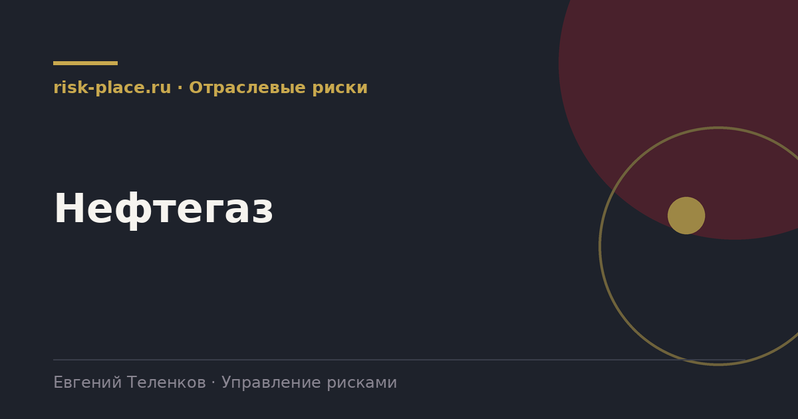

Главная · Библиотека · Отраслевые риски · Нефтегаз
Библиотека · Отраслевые риски
Отрасль, где управление рисками старше самого термина, потому что цена ошибки измеряется жизнями и миллиардами.

| Группа | Содержание |
|---|---|
| Промышленная безопасность | Аварии на опасных производственных объектах, разгерметизация, пожар, взрыв, выброс |
| Геологические и ресурсные | Неподтверждение запасов, снижение дебита, обводненность, точность геологической модели |
| Экологические | Разливы, загрязнение, обращение с отходами, ответственность за ущерб, рекультивация |
| Рыночные | Цена на сырье, курс, спрос, доступ к рынкам сбыта |
| Регуляторные | Налоговый режим, лицензионные обязательства, требования к разработке |
| Инфраструктурные | Транспорт, трубопроводы, портовые мощности, доступ к мощностям третьих лиц |
| Технологические и импортные | Оборудование с длительным циклом, сервисные технологии, программное обеспечение |
| Кадровые | Вахтовый персонал, дефицит квалификации, работа в удаленных регионах |
Первое, приоритет промышленной безопасности над всем остальным и нулевой аппетит к рискам, ведущим к тяжелым последствиям для людей. Это выражается не в декларации, а в праве любого работника остановить работу и в обязательности анализа безопасности перед началом опасных операций.
Второе, глубина количественной оценки. В отрасли применяются методы, редкие для других секторов, анализ дерева отказов, количественный анализ риска аварий с расчетом полей поражения, моделирование сценариев разлива. Это требование не столько методологии, сколько нормативных документов по промышленной безопасности.
Третье, длинный горизонт. Лицензионные обязательства и жизненный цикл месторождения измеряются десятилетиями, поэтому оценка рисков делается на горизонт, который в других отраслях считается фантастическим.
В крупных компаниях отрасли системы промышленной безопасности обычно зрелые, а корпоративное управление рисками менее развито и часто существует параллельно. Реестр стратегических рисков живет в одном подразделении, анализ опасностей в другом, и между ними нет ни общих шкал, ни общей отчетности.
Сведение этих двух контуров дает самый быстрый прирост качества. Не потому, что появляется новая информация, а потому, что руководство впервые видит риски компании в одной картине, где авария на объекте и падение цены на сырье измерены сопоставимо.
Частые вопросы
Одна форма для любого вопроса
Расскажем о ближайших датах, предложим формат под ваш состав участников и назовем порядок бюджета.
Предпочитаете почту — напишите на info@risk-place.ru. Адрес: Москва, улица Скаковая, 32с2.
 risk-
risk-